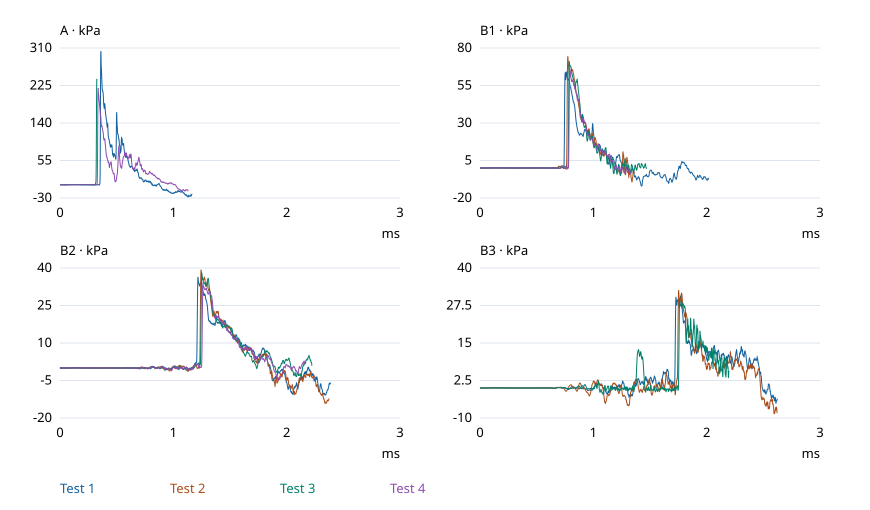

Gabriel 2023 · 100% 转角衍射
实验参考核对完成。BlastFoam 未提交，仍需闭合爆源输入与精确几何。
工况与测点
长方体 PE‑4 21.3 g，长轴与前墙平行。10 mm 钢板转角外廓 400 × 700 × 1080 mm。装药中心及 A、B1、B2、B3 测点离底板均为 540 mm。A 直视爆源，B1–B3 在转角背侧。测点记录侧向超压，断线触发以爆轰为 0 ms。
图 4 是作者 100% 数值模型。它可核对方向与相对位置，图读坐标仍需保留来源精度。75% 的平面坐标需另核，不把跨尺度数值直接用于对比。
原文图 4 与材料表 · 完整原文 · 作者时程工作簿
实测超压时程
同一测点叠加四次试验，纵轴各自标度。压力和时间直接读取补充工作簿 Pressure 工作表。

论文仿真与逐试次实测对比
首次峰值 MAPE 13.35% · 首次到达 MAPE 8.12%，各用 14 条论文公开的非零实测参考。仿真列来自论文 Viper::Blast，显示为文献基线。
实验原表 · Viper 原表 · 逐项数值 · 数据与工作簿校验记录
后续对比口径
仿真须输出 A、B1、B2、B3 四条覆盖 0–5 ms 的时程。峰值与到达时间分别算 APE 和 MAPE，并另报缺测点、窗口、运行终态。A 的二次反射峰单列。75% 冲量原表与工作簿存在差异，先只作辅助资料。
Viper 原文采用 JWL、程序燃烧和后燃。仍待核实其爆源完整输入及工作簿中的到达时刻定义。空气内能采用原文的数值与单位会与同页给出的压力和密度不相容，须在提交前记录取值依据。